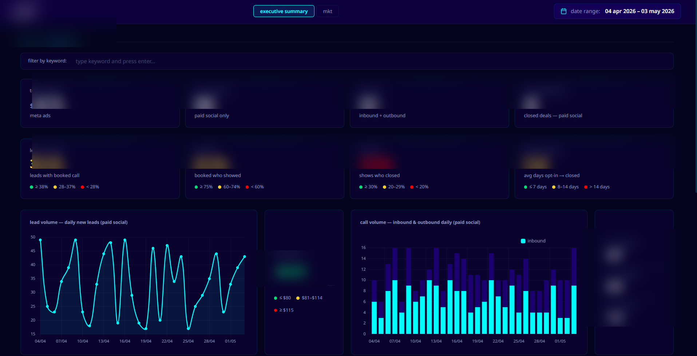

WORK / Selected write-ups
Two systems, end to end.
The full write-ups behind the cards on the home page: a six-platform marketing intelligence dashboard, and a lead-reconciliation audit that ended in pixel forensics. Both told the same way — problem, decisions, outcome — because how the thinking went is the part worth reading.
CASE.01 / Six-platform marketing intelligence system · 2025–present
Six platforms. One screen. Every morning.
Built and run for the leadership team of an established business: six data agents pull Meta, GHL, Monday, GA4, YouTube, and Wistia every day into a single view that surfaces underperforming ad sets before another day of budget burns.
5–7 hours of manual work, replaced by one screen. Underperforming campaigns spotted before lunch — not at the end of the week.
— In production, checked daily

Executive summary view · live in production (private, details blurred)
Architecture / Four decisions that shaped it
-
DEC.01
Why Google Sheets as the warehouse?
Marketing leads needed to spot-check rows manually and slice ad-hoc pivots without learning SQL. Sheets won over Postgres on UX, not engineering elegance — and the dashboard hits a stale cache, not a live API, so query cost stays at zero.
-
DEC.02
Why one HTML file, not a SPA framework?
A single dashboard, two views, a small audience. Inline CSS/JS served via FastAPI on a $12 VPS beats React + Vercel on cost, deploy time, and the number of moving parts that can break at 2am.
-
DEC.03
Why six independent agents instead of one ETL?
Each platform's API breaks differently. Isolated agents fail isolated — Meta going down doesn't take GA4's pull with it, and rate-limit retries stay scoped to the source that triggered them.
-
DEC.04
Why daily pulls and not real-time?
Marketing decisions don't need to be sub-second — they need to land before the next ad-spend cycle. Daily refreshes hit that bar at a fraction of the API cost and complexity. The team checks one screen each morning and acts before 10am.
- 5–7
- hours saved daily
- 100+
- rows ingested / day · 6 sources
- 7
- daily agent runs
- ● Live
- in production
System / How the data flows
From six platforms to one decision.
CASE.02 / Lead reconciliation · an Australian coaching company
The leads Meta reported that the CRM never saw.
Meta Ads and the GoHighLevel CRM disagreed on how many leads existed. Nobody knew which number was real — which meant nobody could say what a lead actually cost. I was brought in to reconcile the two and find out where the truth was leaking.
01 — PROBLEM
Meta's reported lead count and the CRM's contact records diverged month after month. Marketing quoted Meta's number, operations quoted GHL's, and budget conversations stalled on whose spreadsheet was right.
02 — INVESTIGATION
A full reconciliation audit: lead-level exports from Meta matched against GHL contact records — by email, phone, and timestamp — so every discrepancy got classified instead of averaged away. Missing UTMs, form drop-offs, duplicates, and double-counted events each left a different fingerprint.
03 — FINDING
The biggest single culprit: the Meta Pixel was firing twice on the VSL page, inflating reported leads on every campaign that routed through it. The attribution gaps weren't random noise — they were systematic, and they traced back to instrumentation.
04 — OUTCOME
Double-fire fixed at the source, attribution gaps documented, and both systems reconciled against each other.
Method / Decisions that shaped the audit
-
DEC.01
Why record-level matching, not aggregate comparison?
Aggregate comparison tells you that the numbers disagree; only record-by-record matching tells you why. Each unmatched lead is evidence pointing at a specific break — a lost UTM, a failed webhook, a pixel misfire.
-
DEC.02
Why start at the browser, not the CRM?
The pixel is the earliest link in the chain, and everything downstream inherits its errors. Auditing browser-side events first meant the double-fire surfaced as a cause, not as another mystery in the CRM data.
-
DEC.03
Why fix the source instead of adjusting the reports?
Correcting numbers downstream hides the fault and has to be re-done every month. Fixing the double-fire made every future number right by default — and left the reporting untouched and trustworthy.
CONTACT / Let's talk
Want this level of thinking on your systems?
For contracts, retainers, or a specific systems problem — email, LinkedIn, or the form below. I reply within a day.
Prefer email? jaspher.lising01@gmail.com · LinkedIn · Resume (PDF) ↓